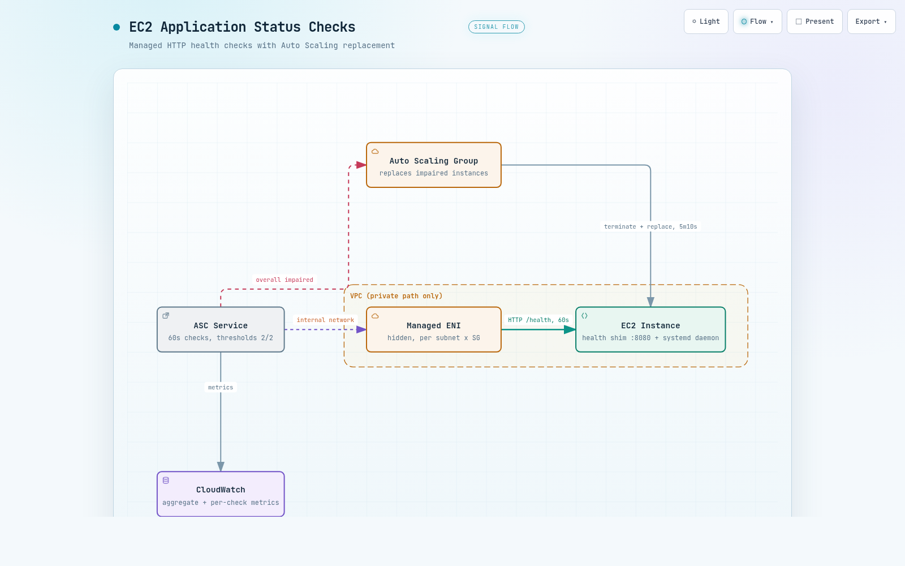

01기능 소개
EC2 인스턴스의 상태 검사(status check)는 지금까지 system과 instance 2종이었습니다. 이 둘은 인스턴스 자체가 살아 있는지까지만 확인하고, 그 위에서 도는 애플리케이션이 실제로 응답하는지는 보지 못했습니다. 2026-08-10 출시된 Application Status Checks는 이 빈자리를 채우는 세 번째, 애플리케이션 계층의 상태 검사입니다.
동작 원리는 단순합니다. AWS가 60초마다 지정한 포트와 경로로 HTTP 또는 HTTPS 요청을 보내고, 응답 코드를 status code matcher와 비교합니다. 연속 2회 실패하면 impaired(장애), 실패 후 연속 2회 성공하면 회복으로 판정합니다(임계값은 설정 가능, 주기 60초는 고정입니다).
AWS What's New(2026-08-10)가 드는 대표 용례는 웹 서버 무응답과 Docker 데몬 미실행 감지입니다. 모든 상용 리전과 GovCloud(US)에서 사용할 수 있습니다.
1.1 기본 설정값
파라미터를 지정하지 않으면 어떤 값으로 동작할까요? 아래 표는 공식 문서 Default settings의 기본값입니다. 이 검증에서는 파라미터 9종을 생략하고 만든 체크가 실제로 이 값들로 동작하는지도 뒤에서 확인합니다.
| 항목 | 기본값 | 비고 |
|---|---|---|
| 체크 주기 | 60초 | 고정, 변경 불가 |
| 실패 임계값 | 연속 2회 | 설정 가능 |
| 성공 임계값 | 연속 2회 | 설정 가능 |
| Timeout | 6초 | 범위 1~30초, 강제 타임아웃 |
| status code matcher | 200 | 기대 응답 코드 |
| HTTP 경로 | / | |
| IP 버전 | ipv4 | 체크당 1개, IPv4/IPv6 둘 다 보려면 체크 2개 |
| IP scope | private | |
| Device index | 0 | |
| 초기화 grace | 300초 | 범위 1~600초 |
| aggregation | included | 1.3에서 설명 |
이 중 운영에서 특히 주의할 값은 초기화 grace입니다. 공식 문서는 grace가 짧으면 애플리케이션이 준비되기 전에 ASG가 신규 인스턴스를 교체할 수 있다고 경고합니다.
1.2 체크는 어디서 오나 - 관리형 ENI
체크 요청의 발신지는 어디일까요? EC2 application status checks 서비스가 대상 VPC 안에 관리형 ENI(AWS가 만들고 관리하는 네트워크 인터페이스)를 생성하고 여기서 요청을 보냅니다. 트래픽은 대상 인스턴스와 같은 AZ의 AWS 관리 인스턴스에서 출발해 AWS 내부 네트워크로만 이동합니다(퍼블릭 인터넷 미경유).
- ENI는 소스 서브넷과 SG 조합당 1개씩 만들어집니다. 조합이 처음 필요할 때 생성되고, 더 이상 필요 없으면 제거됩니다.
- 관리형 ENI는 인스턴스의 ENI 한도에는 계산되지 않지만, 계정의 리전당 네트워크 인터페이스 쿼터(AZ별 집행)에는 계산됩니다.
- 요금은 관리형 ENI당 시간당 $0.01(AZ별)이고, CloudWatch 표준 요금이 별도로 붙습니다.
- ENI 생성은 서비스 연결 역할(EC2ApplicationStatusChecksServiceRolePolicy)이 수행하므로 IAM 설정이 따로 필요 없습니다.
온보딩 방식은 2가지입니다. 기본은 AWS 관리형 네트워크 경로로, --health-check-paths를 생략하면 AWS가 소스/대상 서브넷과 SG를 알아서 고릅니다. 엄격한 세그멘테이션이나 컴플라이언스 요건이 있으면 customer-managed 모드로 경로를 직접 지정할 수 있습니다.
HTTPS 체크는 서버 인증서를 검증하지 않습니다. 재부팅 중에는 체크가 실패로 보고됩니다. Local Zones에서는 ENI가 부모 리전에 위치하고 서비스 링크를 경유하므로 추가 데이터 전송 요금이 발생할 수 있습니다.
1.3 상태 값 체계와 aggregation
체크 결과는 두 층위로 보고됩니다. 개별 체크의 상태와, 인스턴스 전체(overall)의 상태입니다.
- 개별 체크 5종: passed, failed, initializing, insufficient-data, not-applicable
- 인스턴스 전체 6종: ok, impaired, initializing, insufficient-data, not-applicable(모든 체크가 excluded일 때), suppressed
개별 체크가 전체 상태에 반영될지는 aggregation 설정이 정합니다. included(기본)는 전체 상태에 기여하고 ASG가 사용합니다. excluded는 개별 평가와 보고는 지속하되 전체 상태에 기여하지 않아, 프로덕션에서 신규 체크를 검증할 때 씁니다.
suppression은 인스턴스 단위의 일시 억제 수단입니다. duration을 지정하거나 무기한으로 걸 수 있고, 억제 중 전체 상태는 suppressed가 되며 ASG는 조치하지 않습니다. 공식 문서는 배포 전 훅에서 걸고 배포 후 훅에서 푸는 패턴을 안내합니다.
1.4 ASG 통합
이 기능의 실질 가치는 Auto Scaling Group(ASG) 통합에서 나옵니다. included 체크 기준으로 전체 상태가 impaired가 되면 ASG가 해당 인스턴스를 자동으로 종료하고 교체합니다. ASG 쪽 추가 설정은 필요 없고, 체크를 그룹 인스턴스에 연결하기만 하면 됩니다.
그룹 전체 연결은 시스템 태그로 합니다. aws:autoscaling:groupName 태그를 연결 대상으로 지정합니다. 실측에서는 이후 만들어지는 교체 인스턴스도 추가 API 호출 없이 체크에 편입되는 것을 확인했습니다(3.2 참조). ASG는 전체 상태만 사용하므로 excluded 체크와 suppressed 상태는 조치 대상이 아닙니다.
1.5 쿼터
얼마나 많이 만들 수 있을까요? 공식 문서 기준 쿼터는 다음과 같습니다.
- 계정당 체크 50개, 체크당 연결 50개, 계정당 연결 200개(자동 승인 조정)입니다.
- 계정당 타깃 5,000개(수동 승인)입니다. 타깃은 인스턴스와 체크의 페어를 뜻합니다.
- 쿼터를 초과한 타깃은 모니터링되지 않고 상태도 보고되지 않습니다. 문서는 쿼터 사용량에 CloudWatch 알람 설정을 권장합니다.
02테스트 방법
문서를 읽는 것과 동작을 직접 보는 것은 다릅니다. 이 검증은 ap-northeast-2 리전에 테스트 전용 ASG(t4g.micro, AL2023 arm64, 2대)를 프라이빗 서브넷 2개에 걸쳐 만들고, 기본값 확인용 로컬 인스턴스 1대를 더해 진행했습니다(aws-cli 2.36.22).
체크는 2개를 만들었습니다. 로컬용 체크는 설정 파라미터 9종을 일부러 생략해, 서버가 실제로 적용하는 값이 표 1의 문서 기본값과 일치하는지 확인하는 용도입니다. ASG용 체크는 초기화 grace를 90초로 줄이고 aws:autoscaling:groupName 태그로 그룹 전체에 연결했습니다.
2.1 헬스 shim - systemd 상태를 HTTP로 변환
체크가 바라볼 대상으로는 Python 표준 라이브러리 HTTP 서버(0.0.0.0:8080)를 헬스 shim으로 세웠습니다. shim은 /health 요청을 받으면 더미 데몬(demo-daemon.service)의 systemd 상태를 조회해 active면 200, 아니면 503을 반환합니다. systemd 상태를 HTTP 응답 코드로 바꿔주는 얇은 변환 계층이고, ASG 노드에는 user data로 부팅 시 자동 배치됩니다.
더미 데몬에는 Restart=always를 걸었습니다. 의도적인 설계입니다. 크래시성 장애는 systemd가 초 단위로 되살리고, 재시작으로 복구되지 않는 지속 장애만 shim이 503으로 노출합니다. 이렇게 하면 장애 대응이 세 계층으로 분리되는지를 그대로 관찰할 수 있습니다.
장애 주입은 원격 엔드포인트 2개로 합니다. /break는 systemctl stop으로 데몬을 세우는데, 명시적 정지에는 Restart=always가 발동하지 않으므로 지속 장애가 재현됩니다. /fix는 데몬을 되살리며, 두 엔드포인트는 SG로 제어 인스턴스에서만 접근을 허용했습니다.
2.2 체크 생성과 연결
체크 생성과 연결은 CLI 두 번이면 끝납니다. --health-check-paths를 생략해 AWS 관리형 네트워크 경로를 쓰고, ASG 연결은 1.4에서 설명한 시스템 태그 방식을 사용했습니다.
# 생성 - AWS 관리형 경로 (--health-check-paths 생략)
aws ec2 create-application-status-check \
--protocol http --port 8080 --path "/health" \
--status-code-matcher "200" \
--initialization-grace-period-seconds 90
# 연결 - ASG 시스템 태그로 그룹 전체를 한 번에
aws ec2 associate-application-status-check \
--application-status-check-id asc-xxxx \
--target-tag-associations Key=aws:autoscaling:groupName,Value=my-asg2.3 검증 수단
판정 근거는 한 층에 의존하지 않고 네 층으로 교차 확인했습니다.
- 20초 간격 상태 폴러 로그 380건 - 체크와 인스턴스 상태의 전이 시각을 기록합니다.
- tcpdump 캡처 - 체크 트래픽의 실제 프로토콜과 발신 IP를 패킷 수준에서 확인합니다.
- CloudTrail - 관리형 ENI 생성 등 서비스 측 API 호출을 추적합니다.
- ASG 활동 이력 - 종료와 교체의 시각, Cause 문자열을 확보합니다.
작성 전에 보고서의 주장 15건을 독립 재검증 절차로 다시 확인해 9건은 확증, 6건은 부분 확증으로 정정했습니다. 본문에는 정정을 반영한 값을 실었습니다.
03실측 결과
결과는 네 갈래로 정리합니다. 임계값 2회의 실제 모습, 장애 주입부터 교체까지의 타임라인, 체크에 잡히지 않는 장애, 그리고 suppression과 excluded의 동작입니다.
3.1 임계값 2회는 이렇게 움직입니다
연속 2회 실패라는 규칙은 API 응답에서 어떻게 보일까요? 1회째 실패에서는 Reason만 503 응답을 담은 값으로 바뀌고 Status는 passed로 유지됩니다. 2회째 실패에서 비로소 failed와 impaired로 전이합니다.
회복도 대칭입니다. 연속 2회 성공의 2회째에 passed와 ok로 돌아오며, 회복 소요는 실측 2분 24초였습니다. 이 패턴은 에피소드 3개에서 동일하게 재현됐습니다.
1.1에서 예고한 기본값 검증 결과도 여기에 둡니다. 파라미터 9종을 생략하고 만든 체크의 서버 적용값은 표 1의 문서 기본값과 전 항목 일치했습니다. 다만 status code matcher 200은 생성 시 명시적으로 전달한 값이라, 생략 시 기본 200이라는 항목만은 문서 근거로 남습니다.
3.2 핵심 타임라인 - 주입부터 완전 복구까지 약 8.5분
이 검증의 중심 질문입니다. 장애가 나면 얼마 만에 새 인스턴스로 교체될까요? ASG 노드 1대에 /break를 주입하고 폴러 로그와 ASG 활동 이력의 시각을 맞춰본 결과가 아래 표입니다(시각은 UTC).
| 이벤트 | 시각 | 주입 후 경과 |
|---|---|---|
| /break 주입 (systemctl stop) | 12:13:49 | 0초 |
| overall impaired 판정 (연속 2회 실패) | - | 약 2분 |
| ASG 종료 개시 | 12:18:59 | 5분 10초 |
| 교체 노드 Pending → initializing | - | - |
| 교체 노드 ok, 완전 복구 | 12:22:13 | 약 8.5분 |
impaired 확정과 종료 개시 사이의 약 3분은 ASG가 상태를 확인하고 조치하는 구간입니다. 교체 노드는 시스템 태그 연결 덕에 추가 API 호출 없이 자동으로 체크에 편입됐습니다. ASG 활동 이력에 남은 종료 사유는 아래 원문 그대로입니다.
At 2026-08-13T12:18:59Z an instance was taken out of service in response to an EC2 Application Status check failure.3.3 체크에 잡히지 않는 장애 - kill -9
반대로 체크에 아예 보이지 않는 장애도 있습니다. kill -9로 데몬 프로세스를 죽이자 systemd가 7초 안에 재기동했고, 60초 주기 체크의 어떤 평가에도 흔적이 남지 않았습니다(이후 3분간 전부 passed). 그림 1의 계층 분리가 의도대로 동작해, 크래시성 장애는 1계층에서 끝나고 체크까지 올라가지 않습니다.
shim 자체를 세웠을 때는 ConnectionRefused로 실패 처리됐습니다. 감시자가 죽으면 장애로 판정되는 fail-safe 방향입니다. 장애인데 건강으로 판정되는 미탐 방향의 구멍은 이번 검증에서 관찰되지 않았습니다.
3.4 suppression과 excluded의 실제 동작
suppression은 활성화가 즉시 반영되지 않았습니다. API 호출 후 overall이 suppressed로 바뀌기까지 약 3.2분이 걸렸고, 그동안은 실시간 평가 상태가 그대로 보였습니다. 해제도 약 2분 이상 지연됐습니다.
억제 중에 장애를 넣어도 개별 체크는 정상적으로 failed로 전이했습니다. overall만 suppressed로 마스킹을 유지해, 억제 중에는 ASG가 조치하지 않는다는 문서 설명과 부합합니다.
excluded 전환에서는 개별 체크가 계속 평가되어 passed(200)로 보고됐습니다. overall은 not-applicable로 바뀌었고, 체크별 CloudWatch 지표도 계속 발행됐습니다. 1.3에서 설명한 프로덕션 신규 체크 검증 용도가 실제로 성립하는 동작입니다.
04문서와 실측의 간극
출시 첫 주의 기능답게, 문서와 실제 동작이 다르거나 운영에 필요한 정보가 문서에 없는 지점이 6건 나왔습니다. 기능 결함이라기보다는 문서가 아직 따라가지 못한 영역입니다. 자동화 스크립트나 알람을 짤 때 걸리는 부분이므로, 각 항목의 문서 서술과 실측 결과를 표로 대조합니다.
| 항목 | 문서 서술 | 실측 결과 |
|---|---|---|
| 1. 연결 오류의 StatusCode | ConnectionTimeout 등 연결 오류에는 StatusCode와 Protocol 필드가 "not present" | "StatusCode": 0 필드가 존재(연결 오류 278건 전수 확인). Protocol 생략만 문서대로 |
| 2. "HTTP/2 전송"의 실체 | 헬스체크 요청은 HTTP/2로 전송 | HTTP/1.1 요청에 Upgrade: h2c로 HTTP/2 업그레이드를 제안(pcap 6건 전수 동일). HTTP/1.0으로만 응답하는 서버도 정상 평가 |
| 3. suppression 전파 지연 | 지연 언급 없음. 실패 시 suppressed로 표시된다는 뉘앙스 | 활성화 후 약 3.2분간 실시간 평가 상태가 그대로 노출. 앱이 건강해도 suppressed로 전환되고, 해제도 약 2분 이상 지연 |
| 4. 억제 중 CW 지표 | 미기재 | 집계 지표 StatusCheckFailed_Application은 발행 중단(알람이 INSUFFICIENT_DATA로 전이), 체크별 지표는 계속 발행 |
| 5. 관리형 ENI 조회 | 조회 방법 미기재 | Operator.HiddenByDefault로 목록/필터 조회에서 숨김. CloudTrail의 CreateNetworkInterface 이벤트로 ID 확보 후 직접 지정 조회는 가능 |
| 6. 삭제 후 ENI 잔존 | 조합이 더 이상 필요 없으면 제거 | 체크 삭제 후 20분 이상 in-use로 잔존. 해당 SG 삭제가 DependencyViolation으로 차단됨 |
2번을 조금 더 풀면, 문서의 "HTTP/2로 전송"은 HTTP/2 강제가 아니라 업그레이드 제안이었습니다. 캡처된 요청의 User-Agent는 Java-http-client/25.0.4였고, 서버가 업그레이드를 무시하고 HTTP/1.0으로 응답해도 정상 평가됐습니다. 구형 앱 서버도 HTTP/2 지원 없이 그대로 쓸 수 있다는 뜻입니다.
5번에는 덧붙일 관찰이 하나 있습니다. 실제 체크 트래픽의 소스 IP(10.254.2.187)는 CloudTrail로 확보한 관리형 ENI의 IP(10.254.2.162)와도 달랐습니다. 60초마다 0.73초 간격으로 요청 2발이 오는 패턴으로 미루어 이중화된 체커로 추정합니다. 이 부분은 추론입니다.
1번, 4번, 6번은 자동화 코드에 직접 영향을 줍니다. 어떻게 대응할지는 다음 섹션에서 우선순위를 붙여 정리합니다.
05운영 가이드
실측에서 확인한 동작을 기준으로 도입 절차와 운영 설계를 정리합니다. 1순위는 도입 절차입니다. 아래 경고의 루프는 절차만 지키면 피할 수 있고, 나머지 항목은 그 위에 얹는 보완 설계입니다.
체크 트래픽의 SG 인바운드를 허용하지 않은 채 기존 ASG에 included로 연결하면, 신규 인스턴스가 부팅 → grace → 연속 2회 실패 → 종료를 반복합니다. 실측에서는 14분 동안 3세대에 걸쳐 총 5대가 교체됐습니다. 애플리케이션이 건강한데도 인스턴스가 계속 죽어 나가는 상황입니다.
도입 순서는 SG 인바운드 선확인 → excluded로 생성해 일부 인스턴스에서 2주기(약 2분) 이상 관찰 → describe-application-status로 기대 상태 확인 후 included 승격입니다. 이미 루프에 빠졌다면 체크를 excluded로 전환해 교체를 멈추고 SG부터 고칩니다.
5.1 운영 설계 체크리스트
도입 절차 다음은 운영 설계입니다. 네 가지 모두 4장의 간극에서 나온 항목입니다.
- 배포 훅의 suppression은 배포 3분 이상 전에 겁니다. 활성화 후 전파까지 약 3.2분이 걸리고, 그동안 실시간 평가 상태가 그대로 보입니다. 미전파 구간에서 ASG가 impaired에 반응하는지는 이번에 검증하지 못했으므로, 안전하게 3분 대기를 권장합니다.
- CloudWatch 알람은 이원으로 설계합니다. 집계 지표 StatusCheckFailed_Application은 억제 중 발행이 중단되므로, missing data 처리를 notBreaching으로 볼지 missing으로 둘지 의도적으로 선택해야 합니다. 억제와 무관한 관측이 필요하면 체크별 지표(StatusCheckFailed_Application_{asc-id})에 알람을 겁니다. describe API 표시는 서비스 타임스탬프보다 약 40~60초 늦게 관측됐으므로, 자동화는 지표 기반이 빠릅니다.
- Reason 파서는 Code 값으로 분기합니다. 연결 오류에도 "StatusCode": 0 필드가 존재하므로, 필드 부재를 전제로 짠 파서는 깨집니다. ConnectionTimeout, ConnectionRefused 등 Code 값으로 분기하는 쪽이 안전합니다.
- IaC 삭제 자동화에는 재시도 로직을 넣습니다. 체크 삭제 후에도 관리형 ENI가 20분 이상 in-use로 남아, 해당 SG 삭제를 DependencyViolation으로 차단합니다.
결론: 한 문장으로 요약하면, Application Status Checks는 상태 검사의 빈자리였던 애플리케이션 계층을 채우고 ASG 자동 교체까지 이어 주는 기능이며, 실측 기준 장애 감지에 약 2분, 완전 복구까지 약 8.5분이 걸립니다. SG 선확인과 excluded 관찰을 거쳐 included로 승격하고, suppression은 3분 이상 선행하고, 알람을 집계와 체크별 지표로 이원화하면 이번 실측에서 드러난 함정은 모두 설계 단계에서 피할 수 있습니다.

--참고 자료
핵심 출처
- Application status checks for your EC2 instances - Amazon EC2 User Guide https://docs.aws.amazon.com/AWSEC2/latest/UserGuide/application-status-checks.html
- What's New - Amazon EC2 Application Status Checks - 출시 공지 (2026-08-10) https://aws.amazon.com/about-aws/whats-new/2026/08/amazon-ec2-application-status-checks/
공식 문서
- Health checks for instances in an Auto Scaling group - Amazon EC2 Auto Scaling User Guide https://docs.aws.amazon.com/autoscaling/ec2/userguide/ec2-auto-scaling-health-checks.html
- API Reference - ApplicationStatusReason - Reason 구조와 Code 값 https://docs.aws.amazon.com/AWSEC2/latest/APIReference/API_ApplicationStatusReason.html
- Amazon VPC quotas - 네트워크 인터페이스 쿼터 https://docs.aws.amazon.com/vpc/latest/userguide/amazon-vpc-limits.html